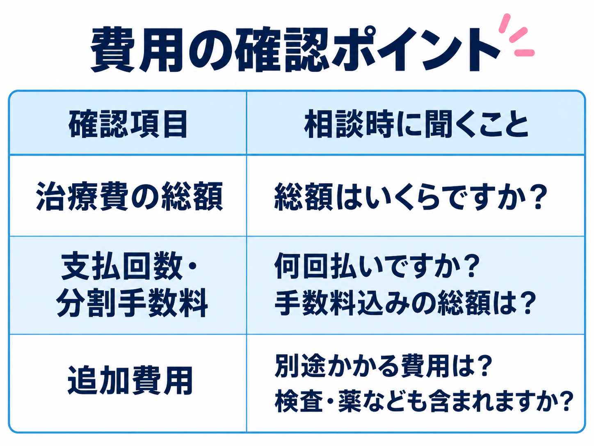
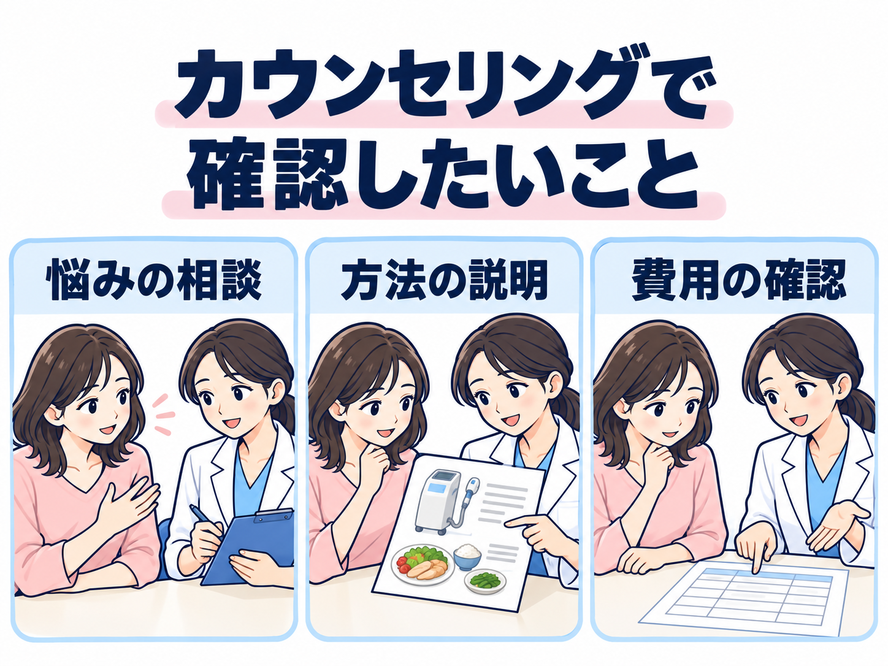

写真に写った自分を見て、「私、こんな感じだったっけ？」
ふと気になった、お腹まわり。
でも、またダイエットと思うと、
少し気が重い。
服を買うとき、着たいデザインよりも
「お腹が目立たないか」を先に考える。
友人と撮った写真を見返して、
自分の姿だけ、つい拡大してしまう。
そう思う瞬間は、何度もある。そろそろ痩せたい。
ダイエット中心にするのは…正直、しんどい。
そんな気持ちに、心当たりはありませんか。
今度こそ、と思ったのに。また、続かなかった。
食事を減らしてみたり、
運動を始めてみたり。
最初の数日は、ちゃんと頑張れる。
でも、仕事から帰るともうヘトヘト。
そこから食事を考えて、運動もして…。
毎日続けるのは、簡単じゃない。
一度休むと、足が遠のいてしまう。
気づけば、いつもの生活に戻っている。
そして、また
自分にがっかり。
そこで、知っておきたいのが
一人で抱え込まない選択肢。
一人で頑張る前に。医療ダイエットという選択。
「手術や注射をするの？」
そう思うかもしれません。
医療機器による施術や薬、食事指導など、
実際にはさまざまな方法があります。
「どんな方法？」と思ったら
医療ダイエットを見てみる →大切なのは、「私に合う方法」を知ること。
URARAクリニックでは、
検査 診察 施術 食事指導
これらを組み合わせたプログラムについて、
希望や生活に合う方法か、医師と相談できます。
全部、自分で決めなくても。専門家に相談できる。
気になる。でも…痛くない？副作用は？
初めてなら、不安があって当然。
何をするのか、身体への負担はどうか。
ちゃんと知ってから考えたいですよね。

痛みや副作用、
施術後の生活への影響は、
治療によって異なります。
相談前に、確認したいこと。
治療の内容と目的／痛み・副作用／仕事や家事への影響／体調が変わったときの相談先
気になることを聞いて、納得してから考える。
自分に合うか、まず内容をチェック
URARAのプログラムを見る →予約する前に、もうひとつ。
ここも、気になりますよね。
- お金のこと。結局、いくらかかる？
- 通うこと。忙しくても通える？
- 勧誘のこと。相談だけでも大丈夫？
「結局、いくらかかるの？」
月額だけでなく、総額を確認。
公式LPの「月々9,780円〜」は、指定の信販会社を利用した分割料金です。
治療費の総額・支払回数・手数料・追加費用まで、相談時に確認しましょう。

「話を聞いたら、断りづらい？」
「相談だけでもOK」
URARAの公式LPでは、無理な勧誘は行わないと案内されています。
「まずは費用や治療内容を知りたい」
その気持ちも伝えてみましょう。
「忙しくても、通える？」
通院の目安は、週1回ほど。
公式LPで案内されている目安です。実際の回数や1回の時間、予約方法を確認して、生活に合うか考えてみましょう。
また自分にがっかりする前に。今度は、
相談から始めよう。
自分にどんな選択肢があるのか。
費用や通い方は、生活に合うのか。
一人で悩んでいたことを、
まずは聞いてみませんか。
相談の流れを、イメージ。

医療痩身は自由診療です。治療の適応・費用・リスクについて説明を受け、ご自身で納得したうえでご検討ください。